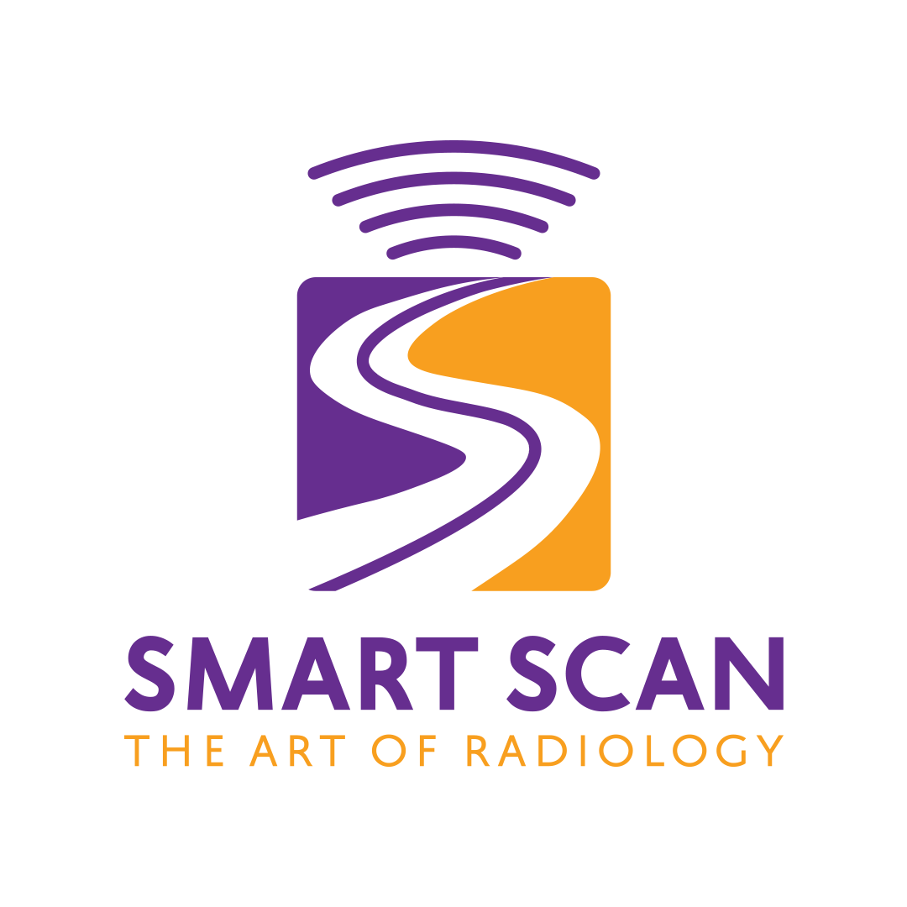
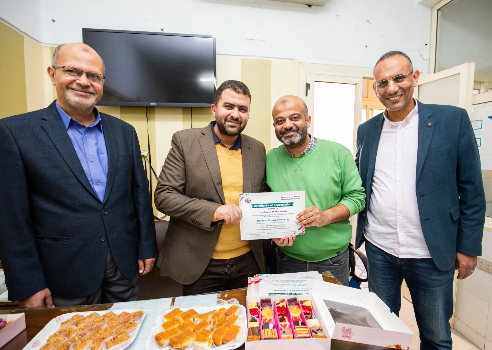
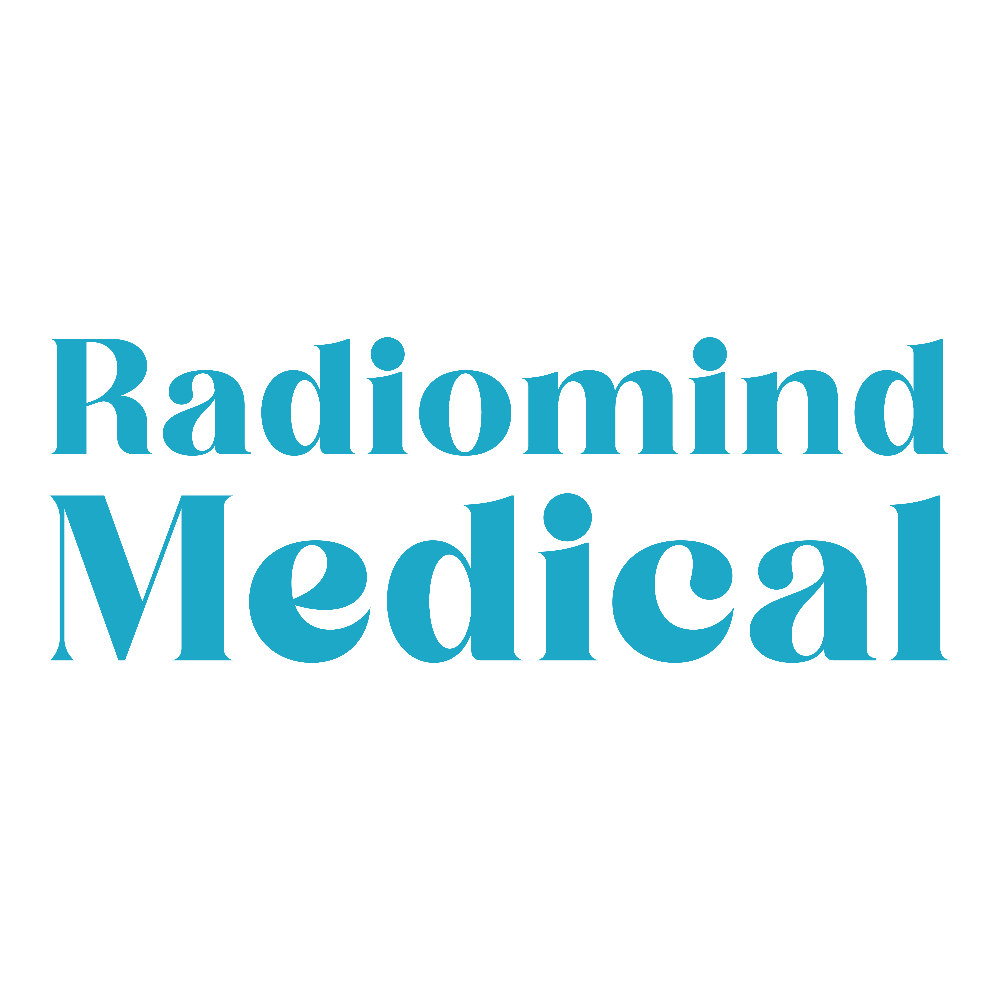

السونار بمختلف تخصصاته
فحص موجّه بالسؤال السريري، مع قراءة متأنية وشرح واضح للنتيجة ضمن سياق الحالة.
اعرف المزيد ←د. محمد مصطفى سليمان · استشاري أشعة
خبرة استشارية في الأشعة التشخيصية والتداخلية والسونار، مع اهتمام خاص بسونار الأطفال والحضانات، ومسيرة تجمع الممارسة الطبية بالتعليم والتدريب.
فلسفة الممارسة
كل فحص يبدأ بسؤال سريري، وكل نتيجة جيدة يجب أن تقرّب الطبيب والمريض من الخطوة التالية بثقة.
تعرّف على المسيرة المهنية ←مجالات الخبرة
اختر المجال الأقرب لاحتياجك لتتعرف على دوره بصورة مختصرة وواضحة.

فحص موجّه بالسؤال السريري، مع قراءة متأنية وشرح واضح للنتيجة ضمن سياق الحالة.
اعرف المزيد ←تقييم وتصوير رباعي الأبعاد وفق طبيعة الفحص المطلوب، مع اهتمام بجودة الصورة وتوثيق النتائج.
اعرف المزيد ←خبرة كبيرة في فحوص الأطفال وحديثي الولادة والحالات داخل الحضانات، مع مراعاة خصوصية العمر والحالة.
اعرف المزيد ←تقييم استشاري يربط فحوص الأشعة بالخطة التشخيصية أو الإجرائية المناسبة لكل حالة.
اعرف المزيد ←تنسيق خدمات الأشعة المتنقلة للحالات التي تحتاج وصول الخدمة إلى مكانها، وفق نطاق التغطية وتوافر المواعيد.
اعرف المزيد ←رحلة الفحص
خطوات بسيطة تساعد على تجربة أكثر هدوءًا ووضوحًا.
أحضر طلب الطبيب، والتقارير والصور السابقة إن وجدت، واسأل عن تعليمات التحضير الخاصة بنوع الفحص.
يتم توجيه الفحص حسب السؤال السريري والأعراض، مع مراعاة راحة المريض وطبيعة الحالة.
يُستكمل التقييم بالنتيجة والتوجيه المناسب للعودة إلى الطبيب المعالج أو متابعة الخطوة التالية.
قد تختلف الخطوات والتعليمات حسب نوع الفحص وحالة المريض.
الفيلم التعريفي
فيديو قصير يعرّف بد. محمد مصطفى سليمان: استشاري أشعة، مؤسس ومدير Smart Scan، ومؤسس ومدير RadioMind للتدريب الطبي.
اضغط للتشغيل بالصوت · مدة الفيديو 10 ثوانٍ
منظومة متكاملة
مشروعان أسسهما ويديرهما د. محمد؛ لكل منهما دور واضح، ويجمعهما معيار واحد: الدقة والمسؤولية.

مركز الأشعة والأشعة المتنقلةممارسة تشخيصية تجمع فحوص السونار، الخبرة الاستشارية، وخدمات الأشعة المتنقلة في مسار واحد منظم.
الخدمات والتخصصات ←

شركة للتدريب الطبيورش ومحاضرات تنقل خبرة الأشعة والسونار إلى ممارسة منظمة، من شرح الحالة إلى التطبيق المباشر على الجهاز.
استكشف التدريب ←الخطوة التالية